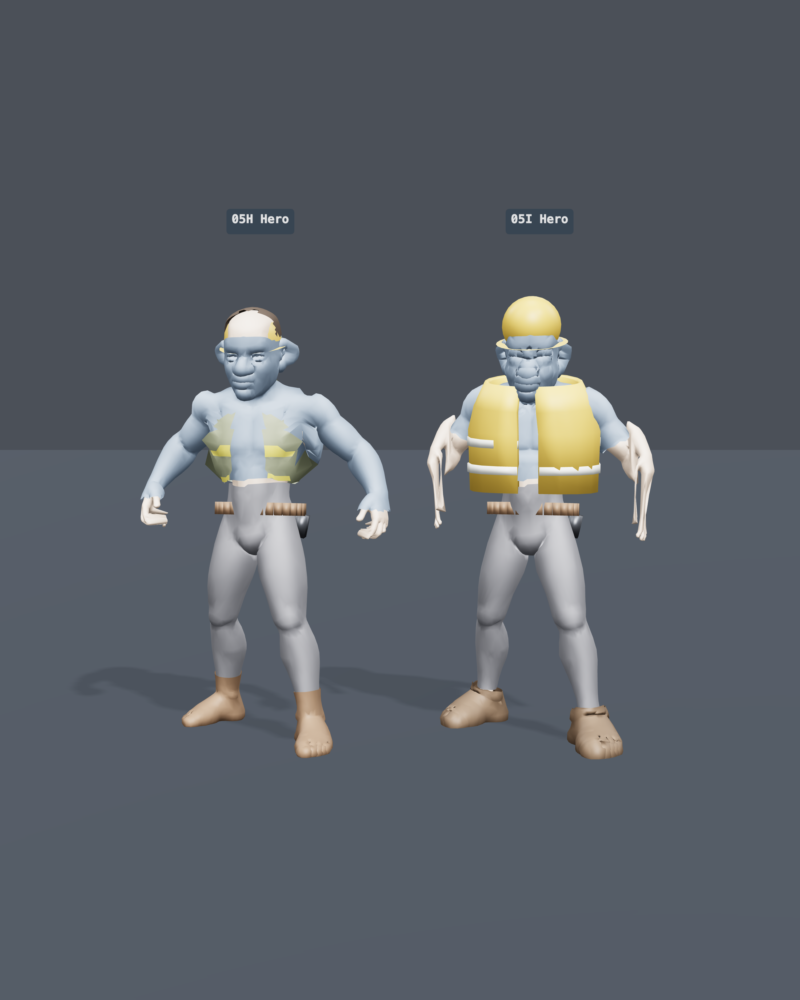
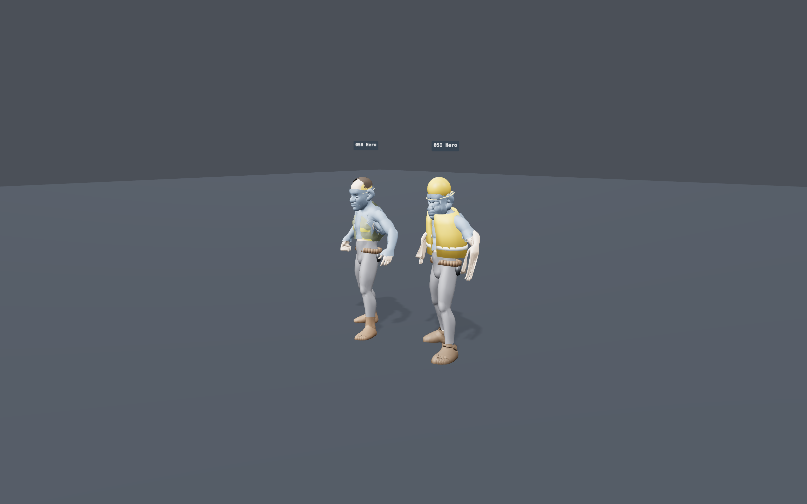
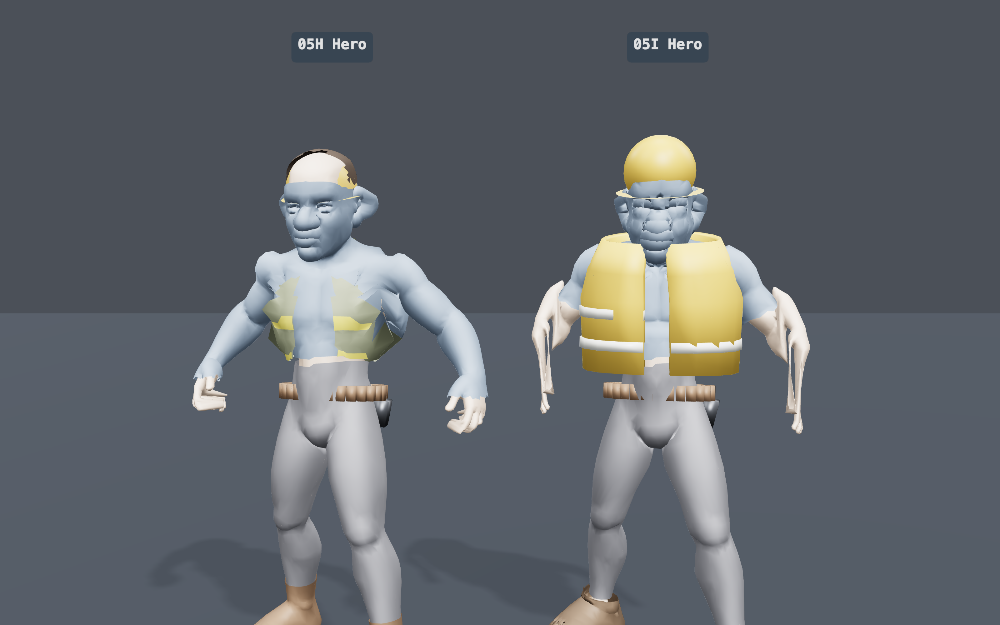
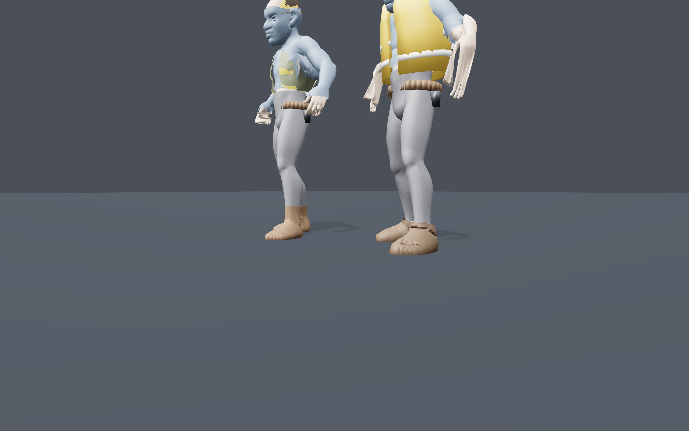
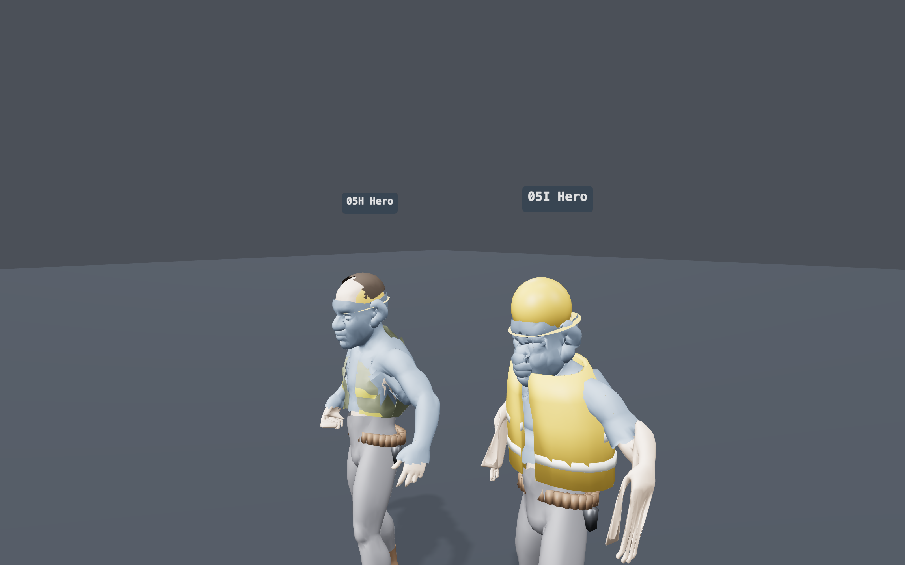
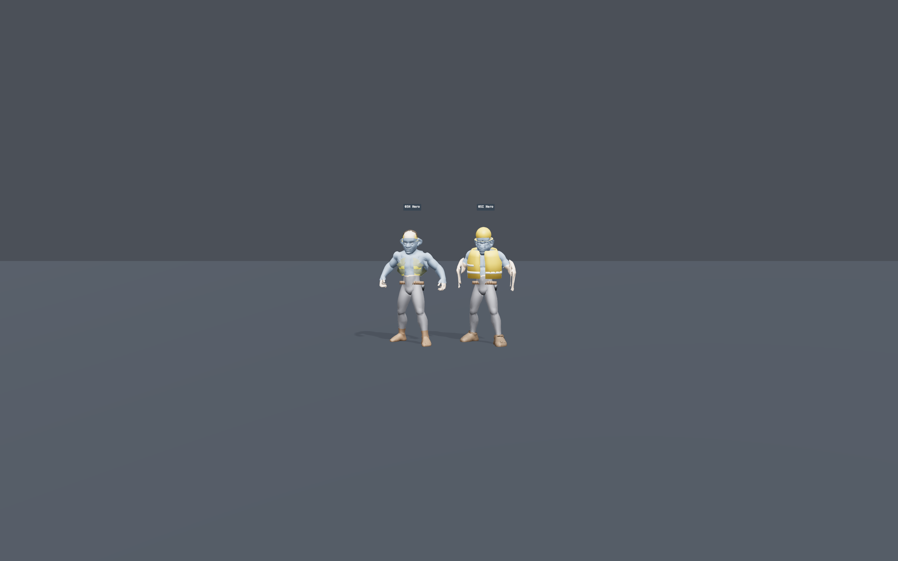
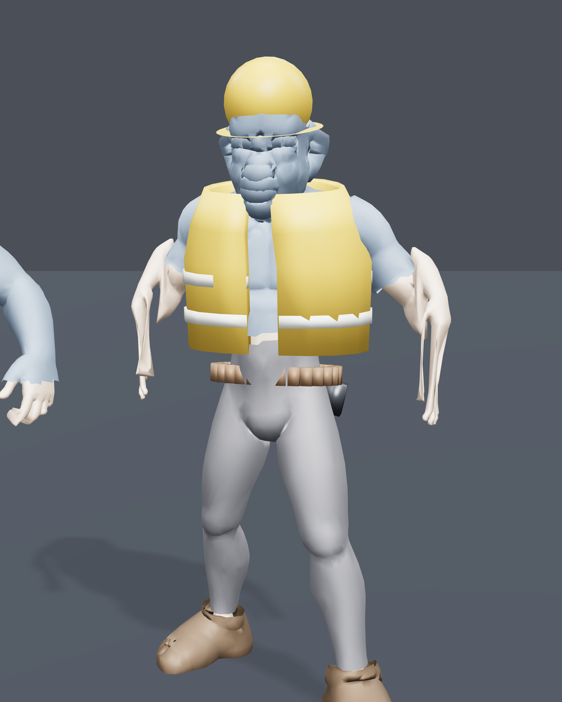
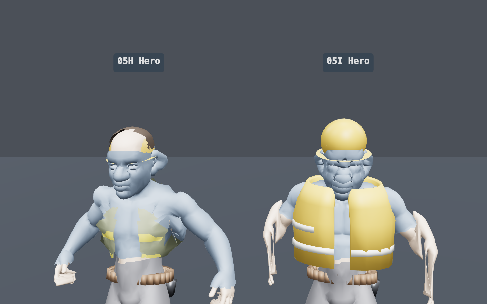
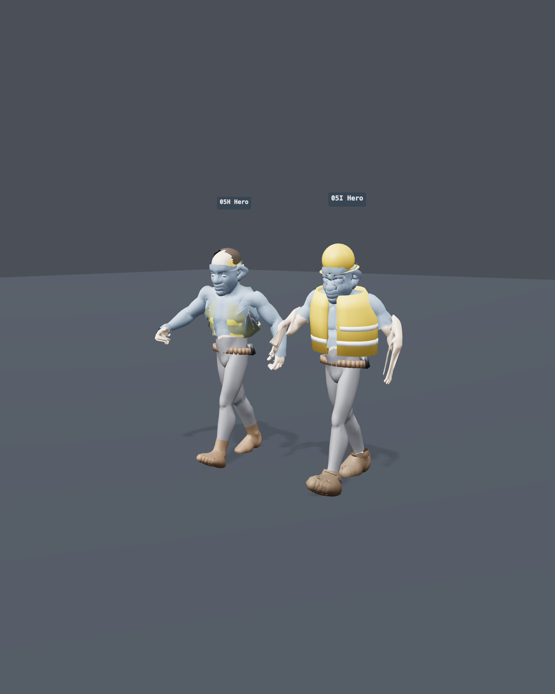
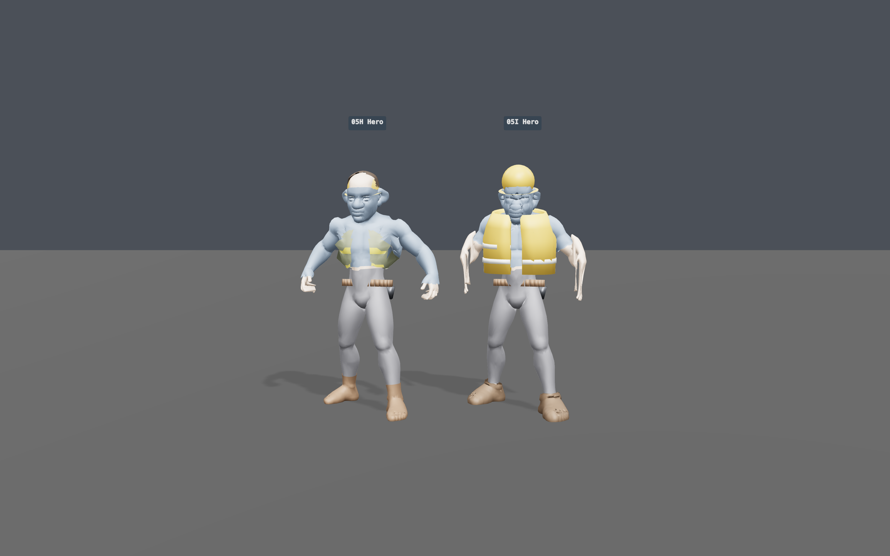

The four Iteration-2 targets
| Target | Result | |
|---|---|---|
| A · Face appeal | softer/simpler than 05H but still heavy/lumpy; not procedurally appealing | not reached |
| B · Proportions | slimmer than 05H's bodybuilder build; panel: partly masked | partial |
| C · Shirt/arm/neck read | short sleeves → bare warm-tan forearms + clean collar (at rest) | rest ✓ / motion exposed hands |
| D · Boot split/detach | weight-inheriting offset shell stays attached in motion; residual toe seam | attachment ✓ |
What works — the worker body / garments / rig
Complete hi-vis vest, closed hard hat, boots covering & attached, tool belt, slimmer proportions, 65-joint rig, all six clips deform, correct warm-tan skin, LODs, console-error-free.






The two blockers — face & hands HUMAN ARTIST
These are why the character cannot go to human-scale approval. Both appear in the neutral-material renders too, so they are geometry/skin-weights, not lighting.




Documents & comparison
- FINAL-REPORT.md — the conclusion
- ITERATION-2-REPORT.md — the full return
- ITERATION-LOG.md — honest pass-by-pass log (incl. rejected experiments)
- Iteration 1 index — for the Iter1↔Iter2 comparison (same framings)
Live harness: npx vite --port 4321 --strictPort → left panel 05I Hero row + Neutral eval light toggle.